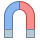

 Pacjent nie może mieć przy sobie absolutnie nic metalowego ponieważ w czasie badania znajduje się w silnym, stałym polu magnetycznym. Wszystkie metalowe elementy w odzieży, we włosach, biżuteria lub jakiekolwiek ruchome metalowe protezy czy stomatologiczne czy ortopedyczne należy zostawić w kabince, w której Pacjent się przebiera przed badaniem.
Niektórzy Pacjenci posiadają w swoim ciele elementy metalowe, których nie da się usunąć i one niestety mogą dyskwalifikować od badania metodą rezonansu magnetycznego. Metalowa cząstka może przesunąć się w polu magnetycznym uszkadzając nieodwracalnie tkanki. Istnieją metale nie posiadające właściwości magnetycznych np. metale szlachetne, tym niemniej mogą one zaburzyć obraz MR i spowodować tzw. artefakty. Jeżeli Pacjent posiada w swoim ciele jakiekolwiek wszczepy, co do których nie ma pewności czy nadają się do badania w polu magnetycznym to wówczas wymagane jest pisemne zaświadczenie od lekarza wprowadzającego te wszczepy do ciała Pacjenta lub tzw. metryczka danego wszczepu dostarczona przez jego producenta świadcząca o bezpieczeństwie.
Często Pacjenci pytają o aparaty ortodontyczne - w takiej sytuacji jest różnie, niektóre aparaty nadają się do badania MR a niektóre nie. Trzeba koniecznie poprosić lekarza, który taki aparat zakładał o informację w tym względzie. Można też samemu w domu wziąć zwykły magnes, przyłożyć do aparatu na zębach i się przekonać co się dzieje, czy magnes przyciąga aparat.
Przeciwwskazaniem do badania jest:
- Posiadanie rozrusznika serca
- Obecność metalowych wszczepów (śruby, płytki, gwoździe)
- Obecność klipsów naczyniowych (klipsy na tętniaku), stentów lub innych elementów pooperacyjnych.
- Protezy z elementami metalowymi (proteza zębowa ruchoma, stała, klamry zębowe)
- Proteza oczna, ciała obce w gałce ocznej (np. opiłki żelaza)
- Spirala antykoncepcyjna - nie wszystkie typy
- Spirala embolizująca
- Pompa insulinowa lub inne urządzenie podające leki
- Neurostymulator lub inne biostymulatory
- Klamry stymulujące wzrost kości
- Wewnętrzny aparat słuchowy lub plastyka kosteczek słuchowych
- Wszczep ślimaka
- Filtr żyły głównej
- Odłamki metalowe, szwy metalowe
- Tatuaż w badanej okolicy
- Pierwszy trymestr ciąży
- Klaustrofobia
- Nadmierna waga Pacjenta (najczęściej powyżej 120 kg)
Pacjenci z klaustrofobią mogą być uśpieni do badania, ale taką sytuację trzeba wcześniej uzgodnić z personelem Pracowni. Niektóre placówki współpracują na stałe z anestezjologami a w innych obecność anestezjologa trzeba załatwić we własnym zakresie (również finansowym). Innym rozwiązaniem jest znalezienie Pracowni MR z tzw. otwartym aparatem, w którym Pacjent leży między dwoma blokami magnesu a wzdłuż jednego boku ma otwartą przestrzeń.
W różnych Pracowniach udźwig stołu, na którym leży Pacjent jest różny i dlatego ograniczenia co do wagi ciała należy ustalać indywidualnie. Istnieją aparaty dostosowane do badania osób z dużą nadwagą (~200kg), ale jest ich niewiele.